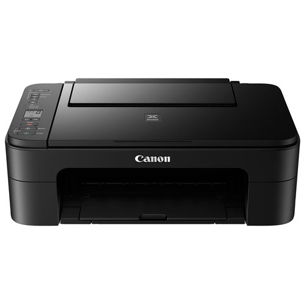
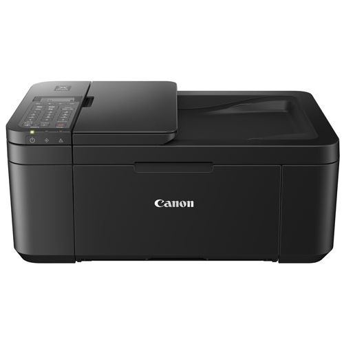
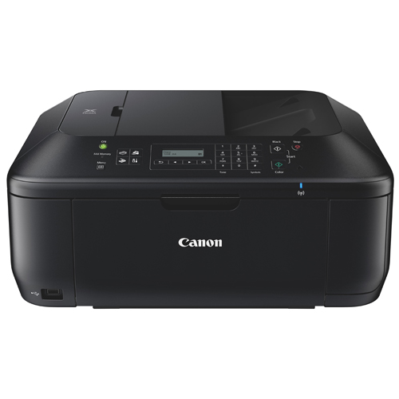

Printer Sellers Ltd.
Home
Products
FAQ
Contact Us

Canon PIXMA TS3129 Wireless All-in-One Inkjet Printer
$99.99

Canon PIXMA TR4527 Wireless All-In-One Inkjet Printer
$99.99

Canon PIXMA All-In-One Inkjet Printer (MX532) - Black
$129.99